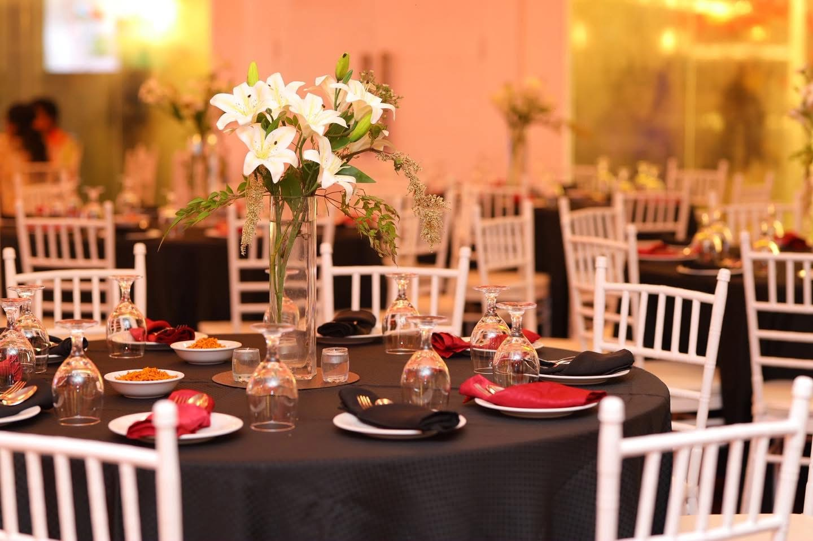
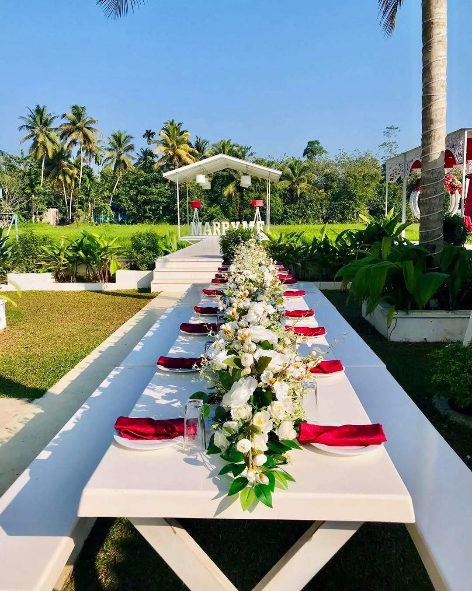

GATHER AROUND
Indoor Dining
Warm lighting, signature red lamps and an inviting atmosphere. Settle into elegant surroundings for conversations over a delicious meal.
Reserve Indoor Dining
Great Food · Beautiful Surroundings · Special Moments
Gather around the table. Share something delicious. Make an ordinary day feel a little more special.
From relaxed family lunches to intimate dinners, discover spaces that make every meal an occasion.
Warm lighting, signature red lamps and an inviting atmosphere. Settle into elegant surroundings for conversations over a delicious meal.
Reserve Indoor Dining
Enjoy your meal with a garden view. Our open-air settings bring fresh air, greenery and the pleasure of dining outdoors together.
Plan an Outdoor Meal
A private pavilion, a beautiful garden and time for each other. Ask our team about creating a personal dining experience for your special occasion.
Some evenings deserve
to be remembered.

From family get-togethers to celebrations with friends, bring everyone together in a setting with room for connection. Tell us your group size and occasion, and we’ll help you plan.

Let’s make time for good food, beautiful surroundings and the people who matter.